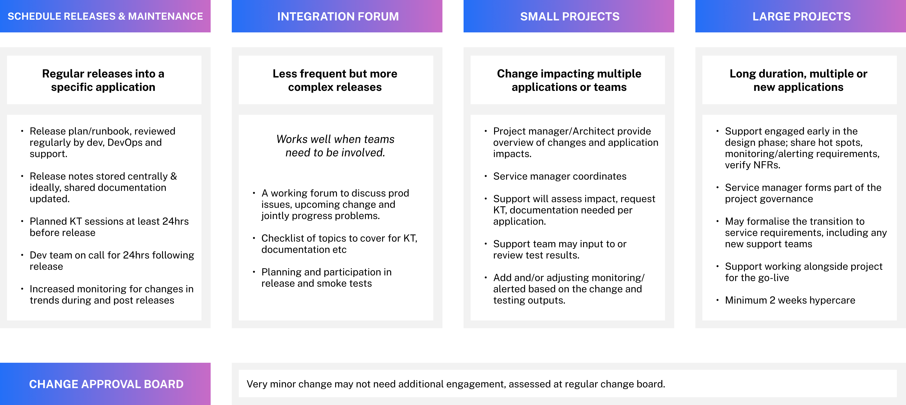
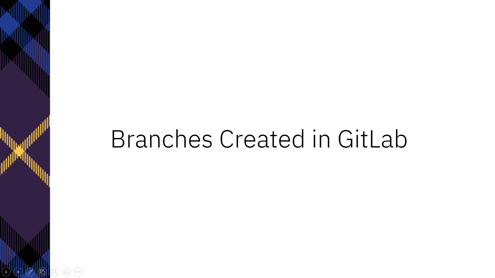
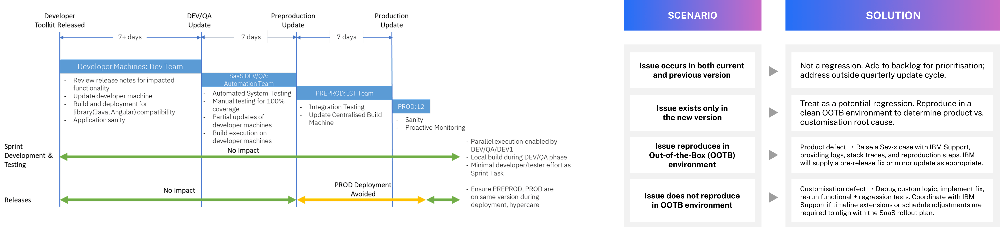
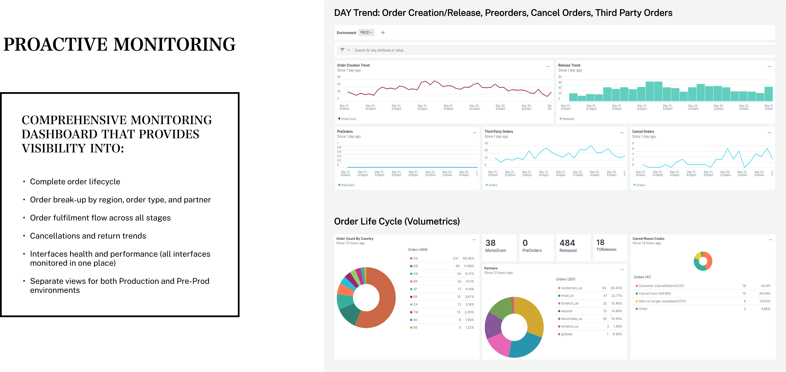
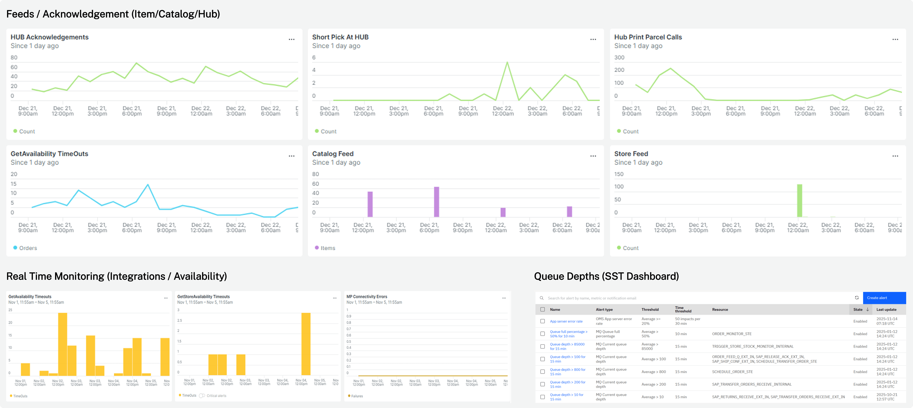
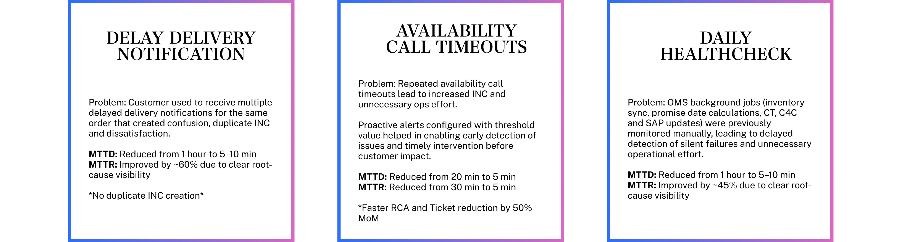
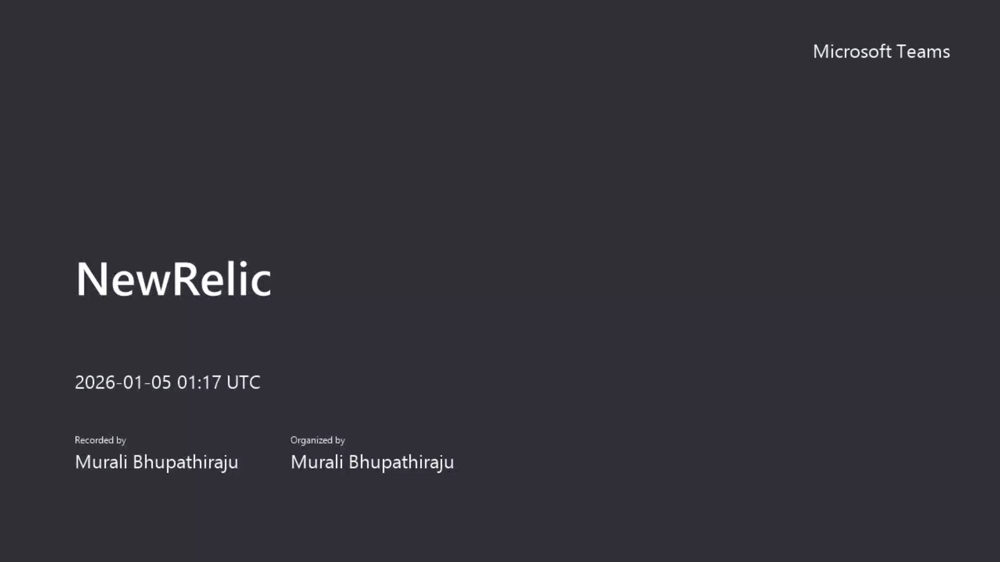
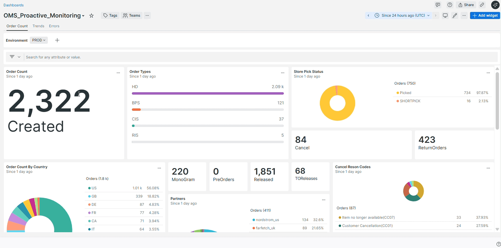
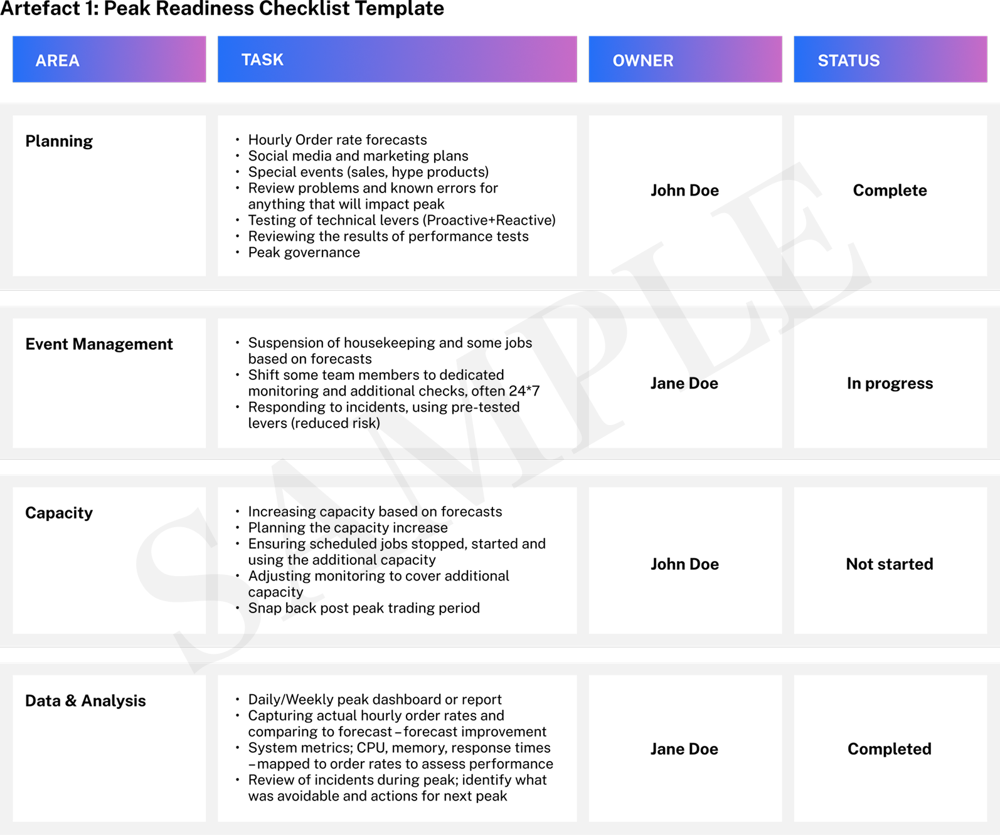
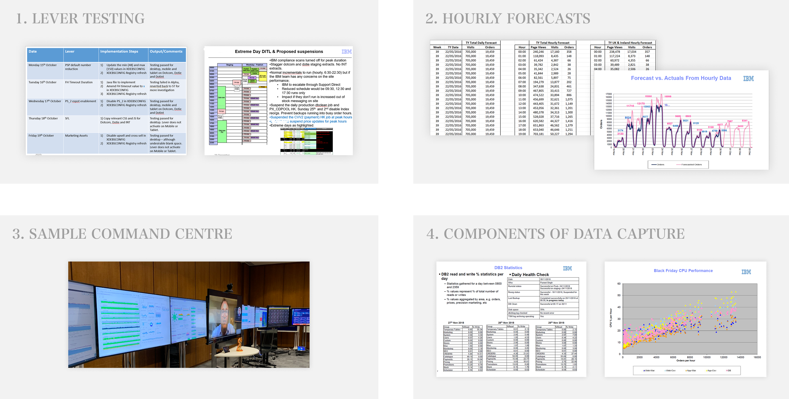

RELEASE MANAGEMENT
To ensure that regular changes into services are safely controlled, so that the business benefits from new features, while protecting service. Detailed release processes sit within Release Plan/Handbook.


RELEASE ENABLERS

QUARTERLY OMOC RELEASE ASSURANCE
Overview of our end‑to‑end process for adopting quarterly IBM Sterling OMS updates, from DTK release through QA, IST, and Production, ensuring stability and controlled rollout

OBSERVABILITY & ACCOUNTABILITY


PROACTIVE MONITORING - OUTCOME

PROACTIVE MONITORING - DEMOS
How Proactive Monitoring helped in MTTD/MTTR, INC

PROACTIVE MONITORING - DEMOS
Overall NewRelic Dashboard Views

PROACTIVE MONITORING - DEMOS
Overall NewRelic Integration Views
PEAK READINESS
Our experience in preparing and running in peak trading across our retail clients, both luxury and wider, together with our experience of peak trading at Burberry ensures that we are prepared for all events and to ensure that order management runs smoothly through this key period.

Artefact 2: Peak Readiness Plan Template
